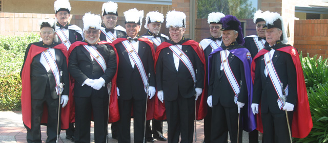
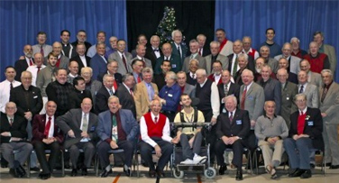

Where All Are Welcome
Call the Parish office : (916) 985-2065
Knights of Columbus

Council 6197
Catholic men's organization dedicated to charity, unity, fraternity, and patriotism through various activities.
Video Vault
Strengthening Your Faith & Your Church
Experience of a Lifetime – Interviews with Knights of varying ages and backgrounds
An Overview of Knights of Columbus Charitable Initiatives Around the World
So That the World May Know New Hope
Knights of Columbus are Men of Service, seeking to help people in need by means of material aid and Christian Charity
Be The Difference
Knights of Columbus Soccer Challenge and Free Throw youth programs
Free Throw Championship and Soccer Challenge